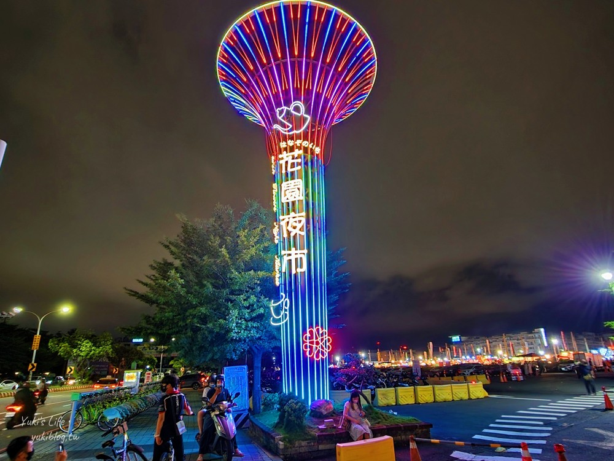
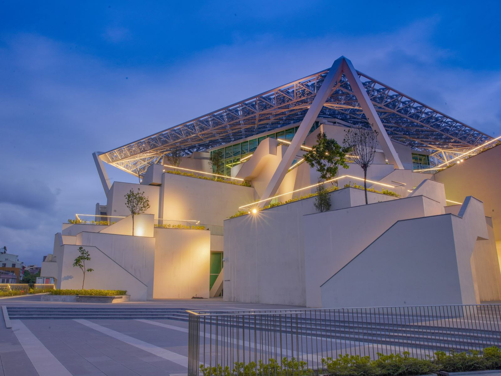

【台南景點推薦】2025台南一日遊這樣玩！最夯台南旅遊好玩景點全攻略
花園夜市
台南市美術館2館
赤崁樓
奇美博物館
花園夜市

知名的台南花園夜市，歷史雖不如其他台灣夜市悠久，但在短時間內卻發展成近400個攤位的大規模夜市，為台南市之冠，也是台灣最知名的夜市之一，並曾於2013年榮登Facebook全球熱門打卡地點第12名，共劃分美食小吃、流行服飾、精品百貨、休閒娛樂等四大區域。而各攤位為了吸引目光，多會在攤販上方豎起高高的商家廣告旗幟，旗海飄揚構成一大特色，有如戰國時代軍隊氣勢。
台南市美術館2館

由石昭永建築師及日本坂茂建築設計事務所共同打造，是由普立茲克建築獎得主所規劃設計的建築物。建築本體以鳳凰花為發想概念，五角形的外型將使南美館成為一座象徵臺南的文化地標，垂直錯落堆疊的展示空間，結合大型碎形屋頂，構成南美館2館的主要外型。
赤崁樓
當時進佔臺灣南部之荷人所建，最初稱為「普羅民遮城」，與安平的「熱蘭遮城」 遙遙相對，互為犄角。熱蘭遮城作為荷蘭總督統治中樞，普羅民遮城則作為行政及商業中心。

奇美博物館
奇美博物館，是一座位於臺灣臺南市仁德區的博物館，為奇美實業創辦人許文龍成立，該館舍是目前臺灣館藏最豐富的私立博物館、美術館。以典藏1萬3,000件西洋藝術品為主，主展出藝術、樂器、兵器與自然史四大領域。場館由「財團法人奇美博物館基金會」負責管理與營運。
該博物館舊址位於奇美實業仁德廠大樓5至8樓，1992年開幕，最初開放個人或團體預約，後在2013年5月閉館後，陸續將展品遷至臺南都會公園內的新館，新館工程於2008年12月正式動工，耗資新臺幣約18.5億元興建，在2012年5月17日捐贈給臺南市政府後，於2015年1月1日啟用試營運。